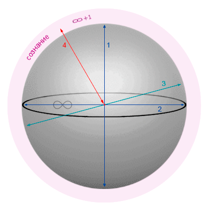

полный текст книги:
Ничто и Точка (предисловие)
Цель
Созерцаемое
Сущность
Сознание
Двухаспектная Сущность
Четвертое измерение и ...
Общество и Человечество
Пятое измерение и ...
Первовозникновение
Акт "Я"
Процесс изучения Акта "Я"
Смысл Бытия
Развитие Сущности
Коллективная реальность
Система развития Сущности
Эхо (отражение)
Реальный аспект Глоб. "Я"
О мировоззрении
Пространство-время
Осношение к Себе
Отношение к своему телу
Лень
Страх
Надежда (Ожидание Чуда)
Адаптация
Тождество личности
Отношение [Рассудок|Тело]
Свобода Воли
Трудная проблема Сознания
Неразличимость и идентичн.
Материя
Гносеология
Эпистемология
Разделение
на главную страницу сайта
— глава седьмая —
————————————————————————————
————————————————————————————
ЧЕТВЕРТОЕ ИЗМЕРЕНИЕ И ЧЕТЫРЕХМЕРНОСТЬ
для попытки понимания необходимо изучить главы:
Созерцаемое, Сознание, Двухаспектная Сущность.
2D-проекция (от среза «0» до вида структуры)

(Уникус – шар – четырехмерность, по оси четвертого измерения, в направлении «внутрь и наружу»)
«Сознание», тем самым, доступно для анализа, то есть, не относится к категории ‘непостижимостей’, коли мы до Него ‘добрались логически’, и посредством исследования (см. рис. 8). Всё это, в целом, можно назвать Проявлением «Сущности», значит это действительно не предел, исходя из предоставленных возможностей <явно безграничных>;
Уровень «0» - это отправная точка и место начала наших исследований. Уровень «1» - это предполагаемое внешнее, то есть ‘прошлое’, исходя из нашей явной реальности. Все уровни с минусом внутренние (-1, -2), то есть именно те, которых мы ‘касались’ в данном исследовании (стр. 41);
Структура четырехмерного пространства полностью соответствует Солипсическому Мироустройству, что подразумевает Условие «Есть только Я», и ничего более – остальное не доказуемо и фактически не существует. Данное учение предельно логично и потому прекрасно как Истина. Идее Солипсизма ~2500 лет – многие признают Ее фундаментальной, т. к. считается неопровержимой. На этом этапе наше исследование не выходит за рамки Солипсизма, но – мы не закончили изыскание, и не вправе допустить даже тень предвзятости. Нас интересуют только факты, и мы сделаем все для поиска ответов на поставленные здесь вопросы. “Еще не вечер, господа…”;
* * *
В трехмерном пространстве ось четвертого измерения это “часть линии, направленной внутрь и наружу”, которая обрывается по причине несоответствия мерности. Часть линии направлена внутрь, это также Ось Потока Данных, поглощаемых «Я», при извлечении опыта в реальности. Визуализация здесь ограничена, но достаточно понятна (на следующей странице, рисунок 9, красная линия №4):

Рис. 9
(часть оси четвертого измерения в 3D пространстве представлена красной линией 4)
Мы полагаем, представление четырехмерности не может вызывать особой нагрузки. Чтобы в дальнейшем избежать сложностей в ‘Понимании «Я»’, либо изучения устройства Мира, лучше с этим разобраться сейчас, либо столкнетесь с непостижимостью. Но, после осознания это окажется в меру простым, но самое главное – в момент осознания Вы приобретете особое преимущество – способность мыслить совсем иными категориями используя четырехмерность, и пока реорганизации рассудка не произойдет, дальнейшие рассуждения будут иметь недоступный смысл, и не будут Вам понятны должным образом так – как это необходимо;
Барьер Мерности – непреодолим без Знания Метода и четкого понимания каждой последующей структуры; Настоящие Знания не приходят сами собой, но их можно приобрести если учиться с особым интересом, т.е. иметь желание и проявить намерение. Настоящее и фактическое, что угодно, всегда имеет логичные объяснимые основания и особенно это относится к знаниям и опыту;
Осознанию Четырехмерности может поспособствовать взгляд, из одной и каждой точки в объеме трехмерности. Это представляется четвертым направлением ‘внутрь и наружу’ и доступно только Существам и вещам которые соответствуют ‘Четырехмерной Природе Рассудка’. Т.е. если Рассудок Существа не имеет специальных функций, необходимых для осознания Четырехмерности, тогда и реализуемое <по Его Запросу> Пространство, не будет приспособлено для объектов такого порядка. Тем самым, ‘Четырехмерные Конструкции’ не будут доступны – по причине недостатка ‘Соответствующих Им Оснований’;
Каждая точка Пространства любой степени мерности, потенциально является перекрестком всех измерений;
Например, Человеку осознающему пятимерность, понятно что каждая точка в четырехмерном пространстве, является пятимерной интеграцией. Т.е. в Его представлении, через каждую из них проходят оси пяти измерений. По аналогии и каждая точка в трехмерности – это перекресток четырех осей для существа осознающего четырехмерность. В этом закономерное отношение к точкам в любом пространстве;
Сформулируем иначе: Все точки любого Пространства, расположены в Общей Структуре бесконечной степени мерности (и сложности, что одинаково. Сложность, как Вложенность – доказуема и указывает на закономерность имеющую отношение к мерности …т.к. хаос невозможен);
Мы часто сталкиваемся с тем, что Мерности актуальны исключительно для Живых, и могут использоваться лишь «Живыми Существами» («Мир для Живых»), потому что только «Я» ('Реальный аспект Сущности’) воздействует на «Сознание» и, в противоположность этому: Объекты не имеют Воли, не могут действовать самостоятельно и не имеют свойства и способности осознания Реальности. Движущееся, что угодно (и где-угодно) является деталью реализации Реальности, и утверждать это может лишь Живой (!) «Присутствующий» (Или, «Предполагающий» – но, тогда Этого не существует, есть лишь Определенные Условия конкретной волны применимые к чистым Идеям).
Следует понимать, что осознание Мерности постижимо и приобретается как Знание и Опыт, причем это относится не только к пониманию (образно) логического устройства, но также и к способности геометрического представления строго определенной, и соответствующей ‘конструкции’, на порядок более сложной – по сравнению с подчиненной, (младшей), дочерней структурой (…лишь часть метода);
Однако, обязательно ли это должно быть пространством? О чем речь? – Мы представляем пространство как объем, к этой категории относятся ближайшие, то есть четвертое и пятое, но есть второе (плоскость), первое (прямая линия) и нулевое (точка). С нашим уровнем развития, мы пока не в состоянии подумать о том, что возможны какие-то иные измерения, ниже точки, или с минусовым значением, типа минус первое, минус второе, но если мы об этом способны думать, то они есть, но о их 'смысле' нет никаких Идей :);
Очевидно, что на данный момент мы не можем адекватно рассуждать об этом, и чтобы не наделать ошибок – лучше остановиться на том, что отрицательных измерений быть не может <по нашим понятиям, с нашей позиции это так>. Если же появится Перспектива, то нас ничто не остановит;
читать следующую главу >> << назад